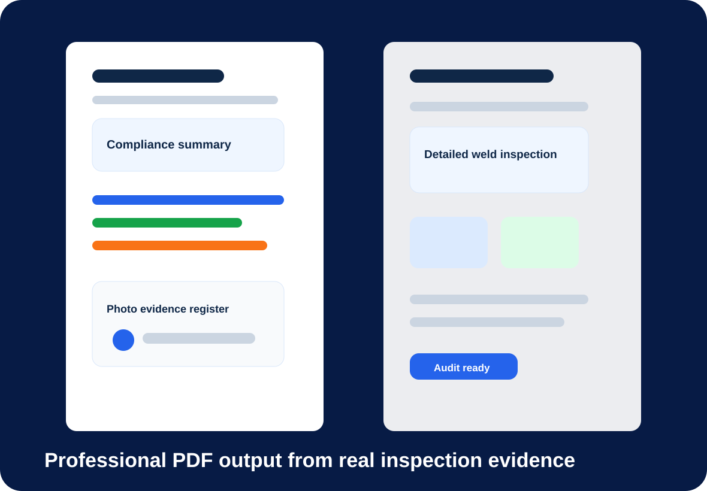
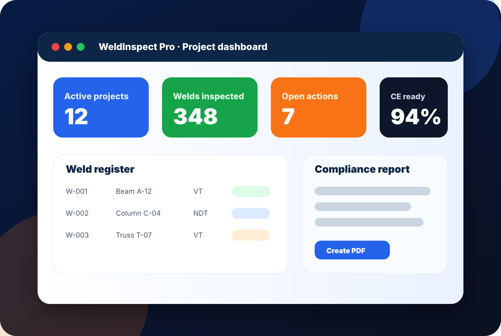
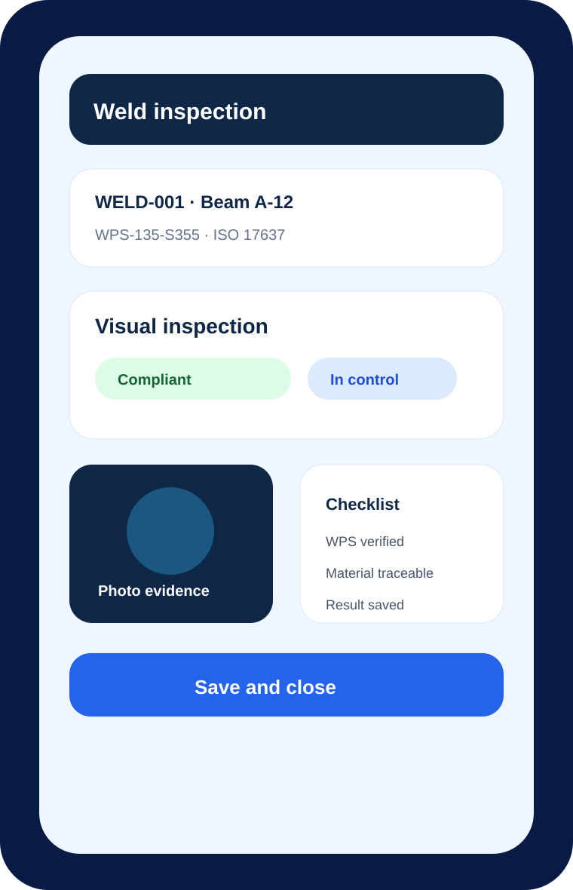
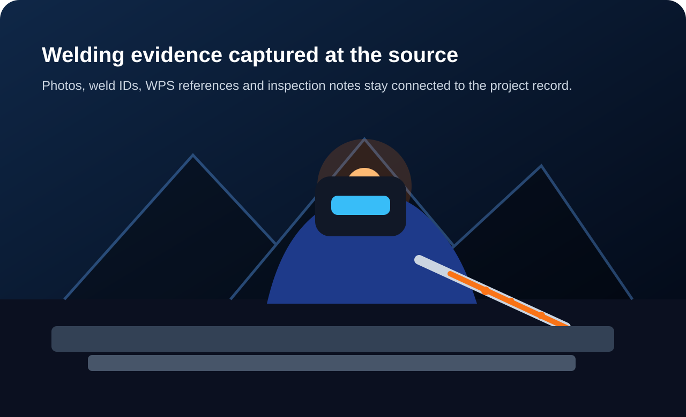

Audit-ready output
- Project status and metadata
- Weld and inspection overview
- Checklist results
- Photo and document evidence
- Audit trail and approval block
Reports
Compile project data, weld records, inspection results, photos and documents into professional compliance output.


The report layer is designed around standards-based completeness and traceability, not a static document dump.
Report examples

